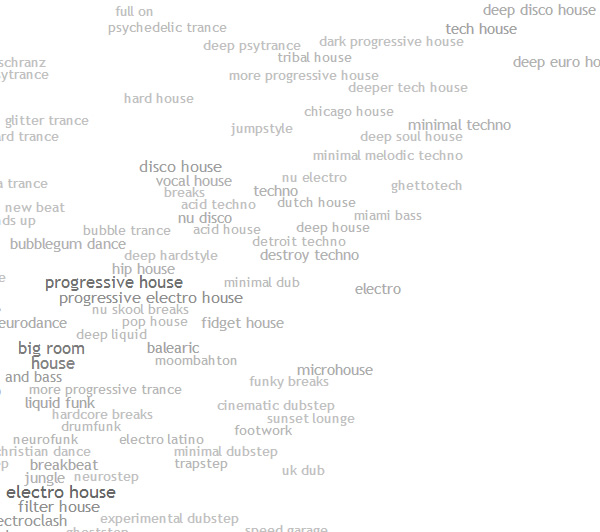

Speedcore, future funk, minimal techno, house, and a variety of other electronic genres are favorites of mine. I also have a good amount of progressive metal tracks saved that I listened to a lot in the past. Acid jazz and other jazz-like tracks are also nice.
A lot of my interests were developed as I was growing up, and I would often sit and listen to music from the radio or TV when I was very young. The channels on television I went to would range from alternative rock to hardcore metal to electronica, and I often spent hours listening to what was on there.
Table of favorite songs and their associated artists and genres.
| Song | Artist | Genre |
|---|---|---|
| Lunatic Speedcore | Ozigiri | Speedcore |
| At Sunset | Yung Bae | Future Funk |
| 99 12 20 12 03 01 05 17 41 | Tomas Jirku | Techno |